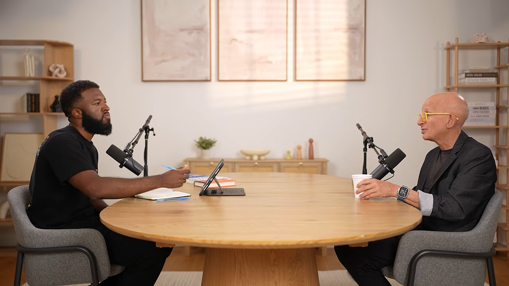
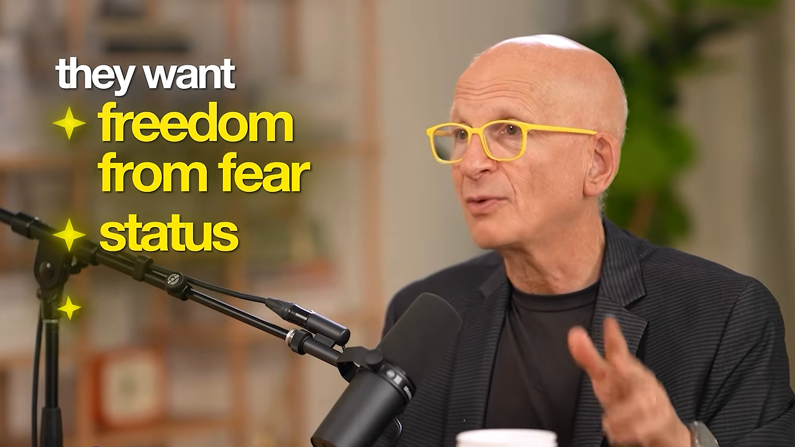

마케팅이란 뭘까요: 싸구려 피자 문제
대담은 아래처럼 둥근 탁자에 마주 앉아 진행돼요. 왼쪽이 진행자, 노란 안경을 쓴 오른쪽 사람이 고딘이에요. 진행자는 고딘의 책 『This Is Marketing』(2018)을 주말에 다시 읽고 와서, 책의 문장을 하나씩 읽으며 질문해요.

소리치기에서 이야기로
고딘은 25년쯤 전에 자기가 마케팅의 뜻을 바꿨다고 말해요. 그 전 100년 동안 마케팅은 광고를 더 돌리고, 사람들을 방해하고, 과장하는 일이었어요. 인터넷이 오면서 남의 관심을 훔쳐 꾸준히 돈을 버는 방식이 통하지 않게 됐어요.
Marketing is telling a true story that helps people get to where they're going that they want to tell other people about.
마케팅은 사람들이 가고 싶은 곳에 가도록 돕는 진짜 이야기를 전하는 일이고, 그 이야기는 사람들이 남에게 하고 싶은 것이어야 해요.
— 영상 02:45
싸구려 피자 문제
평범한 사람에게 평범한 걸 팔면 아무도 나를 이야기하지 않아요. 고딘은 이걸 피자로 설명해요. 아래 그림의 위쪽 길이 평범한 피자예요. 수요가 있으니 조금은 팔리지만, 누군가 똑같은 피자를 조금 더 싸게 팔면 이길 방법은 더 싸게 파는 것뿐이에요. 이렇게 바닥으로의 경쟁이 시작되고, 결국 자랑스럽지 않은 물건을 별로 관심 없는 손님에게 파는 자리에 갇혀요.
아래쪽 길은 세상에서 제일 맛있는 피자를 만드는 거예요. 값은 비싸지만 낸 것보다 더 받아 간다고 느끼게 하고, 손님이 내일 또 오고 싶고 손자에게까지 이야기하고 싶게 만들어요. 고딘은 이쪽을 마케팅이라고 불러요.
만들기는 쉬워졌는데, 공감은 그대로예요
진행자는 Claude Code로 이것저것 만들지만 팔지 못하는 동생 이야기를 꺼내요. 그리고 책의 한 대목을 읽어요. 충분히 바쁘지 않거나, 아이디어가 퍼지지 않거나, 고객이 답답해하는데 더 낫게 할 길이 보인다면 마케팅 문제가 있다는 내용이에요.
고딘은 코딩을 몰라도 코드를 만들 수 있는 건 이케아에서 식탁을 사 오는 것만큼 기적이라고 인정해요. 몇백 년 전엔 식탁이 필요하면 직접 만들거나 만들 줄 아는 사람을 찾아야 했어요. 이렇게 만드는 지름길은 계속 생기지만, 공감과 신뢰에는 아무 진전이 없었어요. 이 둘은 직접 얻어야 해요. "만들 줄 알아서 대단한 사람"이 아니라 "당신 문제를 풀 줄 알아서 대단한 사람"이 되면 손님이 끊기지 않는다고 말해요.
2018년 책이 지금 더 중요해졌느냐는 질문에는 이렇게 답해요. 블로그에는 이번 주에 맞는 이야기를 쓰고, 책에는 기술이 어떻게 바뀌든 참인 것만 쓰려고 했다는 거예요. 사람의 본성은 신뢰, 지위, 소속감, 희소성이고, 이건 지금 덜 중요해진 게 아니라 더 중요해졌어요.
800번의 거절과 두 가지 함정
진행자는 고딘의 첫 실패로 거슬러 올라가요. 1986년, 결혼하려고 뉴욕으로 옮긴 고딘은 북 패키저 일을 시작했어요. 연감이나 지도책처럼 혼자 만들기엔 복잡한 책을 기획해서 출판사에 파는 일이에요. 3쪽짜리 기획서를 우표 붙여 편집자 10명에게 보내는 방식이었어요.
800번 연속 거절
첫 책은 첫날 팔았지만, 그 뒤 기획서는 800번 연속으로 거절당했어요. 그래도 거절 편지가 점점 길어지고 자세해졌어요. "이번엔 안 되지만 다음 것을 보고 싶어요"라는 답이 늘었죠. 고딘은 뭔가 배우고 있다고 느꼈다고 해요.
문제는 자기가 읽고 싶은 책, 남들도 살 거라고 증명할 수 있는 책을 제안했다는 데 있었어요. 편집자는 자기 돈을 쓰지 않아요. 큰 회사의 직원으로서 "이 책을 내면 상사에게 뭐라고 하지?", "파티에서 무슨 책 하냐고 물으면 뭐라고 하지?"를 생각해요. 편집자의 고객은 독자가 아니라 서점이었어요. 고딘은 이걸 깨닫는 데 1년이 걸렸어요.
두 가지 함정
고딘은 이 경험에서 두 가지 함정을 끌어내요. 표의 왼쪽이 흔한 착각, 오른쪽이 고딘이 권하는 태도예요.
| 함정 | 흔한 착각 | 고딘의 답 |
|---|---|---|
| 1. 내가 고객이에요 | 내가 원하는 걸 만들면 남들도 원할 거예요 | 스티브 잡스는 이미 맥이 있어서 다음 맥의 고객이 아니에요. 미적분을 모르는 학생에게 가르치는 게 공감이에요 |
| 2. 진정성이 상이에요 | 가장 진정성 있는 크리에이터와 브랜드가 이겨요 | 진정성은 친구와 가족에게 보여 주세요. 나머지 사람에게는 일관성을 보여야 해요 |
고딘은 진정성이 과대평가됐다고까지 말해요. 기분이 나쁘든 말든 "나는 프로고, 약속하면 지켜요"라는 태도로 상대의 문제를 꾸준히 풀어야 일을 시작할 수 있어요. 인터넷이 가끔 화면에서 피를 흘리는 사람을 보여 주는 서커스라서, 우리는 다음 카다시안이 되고 싶다고 착각한다는 거예요.
일관성은 가면이 아니에요
그럼 연기를 하라는 건가요? 고딘은 키아누 리브스를 예로 들어요. 키아누 리브스는 네오가 아니라 네오를 연기할 줄 아는 사람이고, 관객이 원하는 것도 그거예요. 다만 견딜 수 없는 역할을 쓰면 안 된다고 강조해요. 피를 보면 쓰러지는 사람이 응급실 의사가 되면 몇 달은 버텨도 결국 무너져요. '가장 좋은 날의 나'와 운이 맞는 역할을 찾고, 진정성을 무례함의 핑계로 쓰지 말라고 해요. 고객은 내가 오늘 기분이 나쁜지 궁금해서 온 게 아니니까요.
원하는 걸 주면 될까요?
진행자가 "사람들에게 원하는 걸 줘야 한다"고 하자 고딘은 조심하라고 해요. 가장 짧은 보상과 가장 큰 자극만 원하는 사람도 있어요. 헨리 포드는 더 빠른 마차를 만들지 않았어요. 리더십은 사람들이 아직 모르지만 나중에 "이게 원래 원하던 거였어"라고 깨달을 것을 주는 거예요. 고딘은 그 깊은 바람을 세 가지로 줄여요. 대담 첫머리 예고편에도 이 대목이 자막과 함께 나와요.

They want freedom from fear. They want status and they want affiliation.
사람들은 두려움에서 벗어나고 싶고, 지위를 원하고, 소속감을 원해요.
— 영상 17:11
이 세 가지를 얻게 해 주면 사람들은 "원래 이걸 원했어"라고 말해요. 다만 미리 주문서를 써 줄 수는 없어요. 찾아내는 건 만드는 사람의 몫이에요.
AI를 부릴까, AI에게 부려질까
마케팅 작가로 알려진 고딘에게는 의외로 긴 AI 이력이 있어요. 1974년 AI와 주고받는 대화를 다룬 데이비드 제럴드의 소설 'When HARLIE Was One'을 읽었고, 고등학교에서 절반이 AI 이야기인 SF(Science Fiction) 수업을 가르쳤어요. 1983년 스탠퍼드 경영대학원에 다닐 때는 컴퓨터과학과에서 AI 연구자 더그 레넛의 박사 과정 수업을 들었고, 아이작 아시모프, 아서 C. 클라크 같은 SF 작가들과도 일했어요. 그래서 ChatGPT를 거쳐 Claude에 빠졌을 때 전혀 놀랍지 않았대요. 예상한 그대로였으니까요.
전기 이후 가장 큰 변화, 그리고 말하는 개
고딘은 AI를 두 가지로 요약해요. 첫째, 전기 이후 가장 큰 변화라서 모든 걸 뒤집을 거예요. 둘째, 말하는 개와 같아요. 말하는 개가 한 말이라고 다 맞는 건 아니지만, 말하는 개는 기적이니 무시하면 안 돼요.
그리고 지금 갈림길에 서 있다고 말해요. 아래 그림의 왼쪽은 AI를 위해 일하는 길, 오른쪽은 AI가 나를 위해 일하게 하는 길이에요.
손을 끝까지 들어 보세요
고딘은 강연에서 수천 명에게 오른손을 최대한 높이 들라고 해요. 모두 들면 "더 높이"라고 하고, 모두 더 올려요. 최대한 들라고 했는데도 남겨 둔 거예요. 다 보여 주면 더 해 달라고 할까 봐 아껴 두도록 길들여졌기 때문이에요. 프리랜서나 작은 사업가는 시켜서가 아니라 문제를 풀 수 있어서 손을 끝까지 들어야 해요. 아마존이 배송 기사로 불러 주길 기다리는 것과 반대쪽 길이에요.
AI를 싫어하는 사람, 만들기만 하는 사람
진행자는 두 무리를 봐요. 하나는 AI가 인간다움과 창의성을 빨아들인다며 아예 등을 돌린 사람들이고, 다른 하나는 동생처럼 계속 만들지만 팔지 못하는 사람들이에요.
고딘은 AI가 날씨나 경제처럼 이미 와 있다고 말해요. 반대하는 사람들은 물을 너무 쓴다, 데이터센터가 시끄럽다, 일자리를 뺏는다, 지식재산을 훔쳤다고 번갈아 말하지만, 그 밑에는 "내가 주도권을 잃을 것 같은 두려움"이 있다고 봐요. 내가 AI를 잘 쓴다고 Anthropic이나 OpenAI의 미래가 바뀌진 않아요. 하지만 AI가 무엇을 잘하고 못하는지 알면 두려움을 다루기 쉬워지고 더 나은 비평가가 될 수 있어요.
편리하고 생산성을 높이는 지름길은 결국 시스템이 받아들인다는 게 그의 60년 관찰이에요. 처음 이메일 마케팅을 쓴 건 스팸 업자였듯, AI도 처음엔 상담원 10명을 평범한 자동 응대로 바꾸는 사장들이 먼저 써요. 하지만 시간이 지나면 사람에게 필요한 쪽으로 옮겨 간다고 봐요.
이틀 동안 기계에서 떨어져 보세요
그래서 만들기를 잘하게 된 동생에게 주는 조언은 이래요. 이틀 동안 기계에서 떨어져, 문제를 풀어 주고 싶은 사람 바로 옆에 앉아 공감을 쌓으라는 거예요.
고딘이 쓰는 유료 이메일 앱 Superhuman이 예예요. 하루 1달러꼴인데, 14만 7,000통의 이메일에 답한 고딘에게는 그만한 값어치가 있대요. 이 회사는 첫 1만 명의 고객에게 대표나 임원이 직접 찾아가 한 시간 동안 옆에 앉아 쓰는 모습을 지켜보고 단축키를 가르쳤어요. 고딘은 이 '강제 공감'이 회사 성공의 비결이라고 말해요.
이런 공감이 있어야 "Claude에 스프레드시트를 보여 주면 생산 공정의 문제를 찾아 줄 수 있겠다" 같은 100만 달러짜리 제안이 나와요. 하루 옆에 앉아 보지 않았다면 떠올리지 못했을 생각이에요. 생산성만이 아니에요. 사람들의 두려움, 의미 있는 사람이 되고 싶은 마음, 보이고 싶은 마음도 봐야 해요. 고딘은 페이스북식 모델이 "보이려면 영혼을 팔아야 한다"였다면, 영혼을 팔지 않고도 보이게 돕는 길이 있을 수 있다고 말해요.
레코드가 처음 나왔을 때처럼
고딘은 지금을 레코드가 처음 퍼지던 때와 비교해요. 1940년대에 미국 음악가들은 반복해서 들을 수 있는 녹음이 생계를 망칠 거라며 레코드 산업 전체를 상대로 파업했어요. 그 합의로 생긴 돈은 80년이 지난 지금도 독립 음악가에게 쓰인다고 해요.
그때 컬럼비아 레코드의 존 해먼드는 "새 도구가 생겼고, 문제를 가진 음악가들이 보인다"고 생각했어요. 그리고 브루스 스프링스틴, 아레사 프랭클린, 베니 굿맨, 밥 딜런 같은 음악가를 '발굴'했어요. 고딘은 그를 따라간 사람이 거의 없었다며, 지금이 그때와 같다고 말해요. 다만 이번엔 레코드 산업이 아니라 모든 산업이에요.
고객 옆에 앉아 보기
진행자는 1년 전 대담에서 나온 최소 유효 시장 이야기를 다시 꺼내요. 이미 사업을 하는 사람도 이 부분이 막연하다면서, 고객 옆에 앉았을 때 무엇을 알아내야 하느냐고 물어요.
"이건 당신을 위한 게 아니에요"라고 말하기
고딘은 먼저 왜 좁히기가 어려운지부터 짚어요. 졸업 파티에 갈 상대를 딱 한 명 정했는데 거절당하면 아파요. "이 백 명 중 아무나"라고 하면 덜 아프죠. 코미디언이 "이 네 명은 좋아하고 저 네 명은 싫어하는 사람만 웃길래요"라고 하면, 그 사람들이 안 웃을 때 실패가 분명해져요. 그러면 더 나아지면 돼요.
우리는 대신 평범한 사람을 위한 평범한 것을 만들고, 비판을 모두 개인적으로 받아들여요. 배스 낚시 팟캐스트에 "낚시 얘기가 하나도 없어서 싫다"는 댓글이 달리면, "죄송해요, 이 팟캐스트는 당신을 위한 게 아니에요"라고 말해도 돼요. 그래야 만들고 싶은 걸 만들 수 있어요.
묻지 말고 지켜보세요
누구를 위한 것인지 정할 때 봐야 할 건 겉모습이나 소득처럼 밖에서 쉽게 보이는 게 아니에요. 그 사람이 무엇을 믿고, 무엇을 꿈꾸고, 무엇에 답답해하는지예요. 그런데 사람들은 인터뷰에서 늘 거짓말을 해요. 그래서 행동을 지켜보고, 선택지를 주고, 이렇게 물어야 해요.
- 이렇게 되는 게 나아요, 저렇게 되는 게 나아요?
- 방금 한 일 중 어느 부분이 무서웠어요?
- 세계 최고 전문가가 공짜로 대신해 준다면, 어느 부분을 넘기고 싶어요?
아래 흐름은 고딘이 든 두 예를 이 질문들과 이어 본 거예요. 출발점은 늘 옆에 앉아 답답한 순간을 보는 거예요.
flowchart LR A["고객 옆에 앉기"] --> B["답답한 순간 보기"] B --> C["사라지게 할 수 있는 부분 찾기"] C --> D["마법처럼 느껴지는 해결"] B -.-> E["낯선 도시에서 차 잡기"] -.-> F["버튼 하나로 45초 뒤 도착 (우버)"] B -.-> G["요리하다 칼을 내던짐"] -.-> H["미리 썰어 둔 호박"]
고딘은 우버가 막 나왔을 때 점심 자리에서 동료들에게 "이거 봐" 하고 버튼을 눌렀어요. 45초 뒤 차가 와서 기사가 "세스?" 하고 불렀대요. 그 순간 자기 지위가 올라갔다고 해요. 진행자도 화면에서 차가 조금씩 다가오는 걸 처음 봤을 때 마법 같았다고 거들어요.
좋은 의사는 누가 정할까요
무엇이 '마법의 순간'인지 감이 오느냐는 질문에, 고딘은 의사 이야기로 답해요. 같은 질문에 의료계와 환자는 전혀 다른 답을 해요.
| 누구에게 물었나 | 좋은 의사의 조건 |
|---|---|
| 의료계 | 전문의 자격, 동료들의 존경, 좋은 성과 수치, 철저한 전문성 |
| 환자 | 피 뽑을 때 안 아팠어요. 간호사가 반겨 주고 오래 기다리게 하지 않았어요. 시술 다음 날 전화로 괜찮냐고 물어봤어요 |
환자는 의사가 신경 쓰는 기준을 하나도 몰라요. 아는 건 자기 경험뿐이에요. 고딘의 젊은 의사 친구는 벌을 쳐서 꿀을 만드는데, 친구 20명을 진료 시간 뒤에 불러 꿀과 피부 이야기를 들려줬어요. 그들은 '보인다'고 느꼈어요. 그녀가 CT(Computed Tomography)를 잘 읽는지는 몰라도 상관없어요. 사람은 보이고 싶고, 이해받고 싶고, 안전하고 싶어요.
프리랜서와 기업가는 달라요
고딘은 작은 사업을 하는 사람을 모두 '기업가'라고 부르는 데 반대해요. 이 대담을 듣는 사람 대부분은 기업가가 아니라 프리랜서라고 말해요. 고딘 자신도 초창기 인터넷 회사를 세운 기업가였지만, 그 일이 싫어서 지금은 프리랜서예요.
| 기업가 | 프리랜서 | |
|---|---|---|
| 만드는 것 | 나보다 큰 것 | "내가 만들었어요"라고 말하는 일 |
| 돈을 버는 때 | 자는 동안에도 | 일할 때 |
| 할 일 | 일자리를 만들고 사람을 뽑는 것뿐이에요 | 더 좋은 고객을 얻는 것뿐이에요 |
| 고딘의 조언 | 원조 아이디어는 필요 없어요. 남의 아이디어를 더 잘 실행해서 이기세요 | 좋은 고객이 고용하고 싶은 사람이 되세요 |
스스로 기업가라고 부르는 사람이 돈이 빠듯하면 가장 싸고 가장 잘하는 사람, 즉 자기 자신을 모든 자리에 고용해요. 그러니 지치고, 돈도 못 받고, 회사도 안 커요. 기업가라면 아이디어가 원조일 필요도 없어요. 페이스북 전에 프렌드스터가, 구글 전에 라이코스가 있었어요.
프리랜서는 일하는 시간을 늘릴 수도, 자기 같은 후배를 공짜로 쓸 수도 없어요. 그래서 올라가는 길은 더 좋은 고객뿐이에요. 나쁜 고객에게 잘해 준다고 좋은 고객이 오지 않아요. Upwork나 Fiverr에서 4달러짜리 로고를 만들면, 나를 고른 이유가 싸서이기 때문이에요. 좋은 고객이 무엇을 원하고, 무엇을 두려워하고, 어떤 신호를 찾고, 나를 고용한 뒤 동료에게 뭐라고 말할지 생각하고 그런 사람이 되어야 해요.
진행자는 여기서 정리해요. 고객 옆에 앉아 이 정도로 세밀하게 이해하는 공감이 AI 시대의 차별점이라는 거예요. AI는 그걸 흉내 낼 수 없으니까요.
변화를 만드는 세 가지 방법
진행자는 『This Is Marketing』의 한 대목을 읽어요. 상사의 생각이든, 학교 제도든, 내 상품의 수요든, 누군가를 바꾸기 전까지는 영향을 준 게 아니라는 내용이에요. 그리고 바꾸는 방법은 세 가지라고 해요.
마케팅은 변화를 만드는 일이에요
"그냥 물건을 팔고 싶을 뿐인데 왜 변화까지 말하느냐"는 질문에 고딘은 이렇게 답해요. 변화는 사소해도 돼요. A 가게 단골이 B 가게 단골이 되는 것도 변화예요. 변화를 만들지 않는다면 그냥 상사 없는 일자리를 찾는 셈이고, "아무나 고르세요, 저도 아무나예요"라고 하면 더 싸게 파는 사람에게 영원히 밀려요. 사람은 원래 변화를 싫어하니, 변화를 일으킬 방법이 필요해요.
아래 그림은 고딘이 든 세 가지 방법과 예시를 나란히 놓은 거예요. 가운데 소속감과 오른쪽 지위는 대담 첫머리의 '세 가지 바람'에서 쓴 색과 같은 색이에요.
- 긴장 만들기. 뜨는 배우가 나타나면 모든 캐스팅 감독이 '무시할까, 오디션에 부를까' 하는 긴장을 느껴요. 좋아하는 음악가가 뉴욕에 온다는 소식에는 '표를 살까, 매진되면 어쩌지' 하는 긴장이 생겨요. 지금 있는 곳과 가고 싶은 곳 사이에 틈이 없으면 아무도 움직이지 않아요. 심장 전문의가 "담배를 끊지 않으면 죽을 수도 있어요"라고 하는 것도 너그러운 긴장이에요.
- 문화적 규범 세우기. 사람은 소속되고 싶어요. 내 왼쪽과 오른쪽 사람이 뭘 하는지 봐요. 아이폰을 첫날 줄 서서 산 사람은 몇 없고, 대부분은 이미 가진 사람에게 듣고 따라가요. 누구나 다섯 번째나 쉰 번째로 가요. 30년 전엔 길에서 혼자 중얼거리는 사람처럼 보였을 이어폰 통화가 지금은 평범해졌어요.
- 지위 바꾸기. 누가 먼저 점심을 먹고, 누가 위고 누가 아래인지. 고등학교에서 인기 많은 아이들이 앉는 테이블부터 시작돼요. 고속도로 진입로에서 누가 끼어들면 3초 차이인데도 화가 나요. 회의를 여는 것도, 회의에서 굳이 발언하는 것도 지위와 관련이 있어요.
고딘은 정리해요. 두려움에서의 해방, 지위, 소속감. 이 세 가지를 중심으로 이야기를 하고, 네트워크를 만들고, 상품이나 서비스를 내놓으면 마케터라는 거예요.
긴장은 어떻게 만들까요
진행자는 '긴장'을 기대감과 긴박감으로 받아 적었다며, 작은 가게나 온라인 코치는 어떻게 긴장을 만드느냐고 물어요. 고딘은 앰프 회사 Decware를 예로 들어요. 몇천 달러짜리 앰프가 좋은 평을 받았는데도 주인은 생산을 늘리지도, 해외로 옮기지도, 사람을 더 뽑지도 않았어요. 그래서 대기가 2년이고, 공유 구글 시트에서 내 순서를 볼 수 있어요. 경제학으로는 최대한 크게 키워야 하지만, 그건 주인이 원하는 삶이 아니었어요. 그 부수 효과로 2년 대기 명단 자체가 긴장을 만들어요.
프리랜서도 마찬가지예요. "무엇이 필요하세요?"라고 묻는 프리랜서는 상사 없는 일자리를 찾는 셈이에요. "저는 이것만 해요"라고 말하는 프리랜서는 '예'를 덜 듣지만, '예'라고 하는 사람은 "이 사람이 안 받아 주면 어쩌지"라는 긴장을 풀려고 찾아와요. 다만 먼저 대단한 걸 만들어야 해요. 싸구려 피자를 "10조각 한정"이라고 해도 두 조각도 안 팔려요.
구체적이어야 줄이 서요
진행자는 이런 회사들에 '채워지지 않은 수요'가 있다고 말하고, 그 상태에 어떻게 이르느냐고 물어요. 고딘의 답은 구체성이에요. 다른 슈퍼마켓과 똑같은 슈퍼마켓 앞에 줄을 설 이유는 없어요.
I only do weddings in these three zip codes and I'm the best at it. I charge the most.
저는 이 세 우편번호 지역에서만 결혼식을 찍고, 제가 제일 잘해요. 값도 제일 비싸요.
— 영상 49:09
이런 사진작가는 자기 작업에 이름을 남겨요. 2년 뒤 다른 사람이 찍은 웨딩 앨범을 보여 주면 "왜 그 사람한테 안 맡겼어?"라는 말이 나와요.
모두가 아니라 누군가를 위한 최고
신발을 벗고 들어온 난방 기사
고딘은 100년이 넘은 집으로 이사한 직후 난방이 고장 났던 이야기를 해요. 전화번호부에서 처음 보이는 네 업체에 전화했어요. 첫 기사는 지하실이라 괜찮다는데도 "늘 신발을 벗어요"라며 신발을 벗었어요. 그리고 지하실에서 클립보드를 건넸어요. 이웃 40명의 이름과 전화번호, 그리고 전화로 물어봐도 좋다는 동의가 적혀 있었어요.
고딘은 기사가 계단을 다 올라오기도 전에 "고용할게요"라고 했고, 나머지 세 곳은 부르지도 않았어요. 가장 싼 난방 기사가 아니라 그 클립보드를 채운 사람과 일하고 싶었던 거예요. 이건 정말 어려운 일인데, 기술 학교에서는 오히려 대충 하고 다음 집으로 서두르는 법, 즉 싸구려 피자를 가르친다고 꼬집어요.
마케팅 5단계
진행자는 이 이야기가 책에 나오는 마케팅 5단계 중 처음 두 단계와 똑같다며 읽어요. 아래 그림은 진행자가 대담 곳곳에서 읽은 다섯 단계를 한 줄로 모은 거예요. 테두리가 진한 1, 2단계가 이 섹션의 이야기이고, 3단계는 다음다음 섹션, 4, 5단계는 마지막 섹션에서 다뤄요.
진행자는 1단계를 듣고 '완전히 새롭고 대단한 걸 만들어야 하나' 싶었다고 해요. 그런데 난방 기사는 전화번호부에 수두룩한 똑같은 서비스를 하면서도 이야기할 가치가 있는 무언가를 만들었어요. 고딘은 "대단한 것인 경우는 거의 없다"고 답해요.
공 다섯 개면 충분해요
남이 못 하는 대단한 일을 혼자 해낼 확률은 거의 0이에요. 유튜브에서 저글링을 보면 공 8개, 9개, 10개를 돌리는 사람들이 있어요. 잘하는 게 다 보이니 모두가 더 잘해야 하는 구조예요. 하지만 저글러로 먹고살려면 공 다섯 개면 충분해요. 사람들은 공 개수가 아니라 그 사람이 주는 기분에 돈을 내요. 펜 앤 텔러도, 데이비드 블레인도 세계 최고의 마술사는 아니지만, 사람들을 특정한 기분이 되게 하고 그런 사람은 한 명뿐이에요.
왜 평범한 걸 만들게 될까요
고딘은 사람들이 실패하고 싶어서 평범한 걸 만드는 게 아니라고 말해요. 두 가지를 동시에 원해서예요. 내 일이 선택받기를 원하고, 동시에 아무도 "나를 빼놨다", "사기꾼이다"라고 비판하지 않기를 원해요. 이 매듭이 사람을 평범하게 만든다는 게 새 책의 주제라고 해요.
고딘이 그만두기에 관한 96쪽짜리 책 『The Dip』을 들고 갔을 때, 출판사의 선의 어린 사람들은 "책치고 너무 짧다", "그만두기에 관한 책은 아무도 쓴 적 없다"고 했어요. 평범한 사람을 위한 평범한 책이 목표라면 둘 다 맞는 말이에요. 하지만 고딘은 누군가가 "날 위해 쓴 책 같다, 내 인생을 바꿨다"고 말하길 원했어요.
그래서 리뷰는 읽지 말라고 해요. 별 하나짜리 리뷰를 읽고 더 나은 작가가 된 사람은 본 적이 없대요. 그건 "나를 위한 게 아니었다"는 뜻일 뿐이고, 둘 다 맞는 말이에요. 고딘은 친구 지그 지글러의 말을 빌려 "방황하는 일반론이 아니라 의미 있는 구체성"이 되라고 해요.
"길 아래로 가 보세요"
고딘은 손님을 돌려보내는 가게들을 예로 들어요.
| 가게 | 하지 않는 것 | 손님에게 하는 말 |
|---|---|---|
| 뉴욕 시내의 피자집 | 올리브와 피자만 팔아요. 치즈 없는 메뉴도, 글루텐 프리도 없어요 | "도와드릴 수 없어요. 이런 피자를 좋아하는 사람에게 뉴욕 최고의 피자예요" |
| 파리의 Poilâne 빵집 | 바게트가 없어요 | "길 아래로 가 보세요" |
| 파타고니아 | 셔츠값을 깎아 주지 않아요 | "컬럼비아에 전화해 보세요" |
고딘은 "이걸 할 수 있는 사람은 나밖에 없다"며 손님을 붙잡으면 오히려 정체가 드러난다고 말해요. 경쟁자라고 여기는 곳에 손님을 자주 보내는 건 좋은 신호예요.
진행자도 비슷한 경험을 들려줘요. 형제들을 뉴욕의 Apollo Bagels에 데려갔는데 메뉴가 몇 개 없었고, 형제들 입맛에 맞는 게 하나도 없어서 그냥 나왔대요. 처음엔 민망했지만, 맞지 않는 사람이 스스로 알아보고 떠나는 건 좋은 신호라는 걸 알았다고 해요. 남은 사람은 그 가게를 사랑하니까요. 진행자가 처음 옷 브랜드를 시작했을 때 모두가 입는 장면을 상상하다가 끝내 내놓지 못한 것과 정반대예요.
바이럴 대신 진짜 팬 10명부터
고딘은 아무리 작은 직업에도 채워지지 않은 수요와 풀 문제가 있다고 말해요. 장의사라도요. 그런 일로 토크쇼에 나가진 못하겠지만, 토크쇼에 나가는 게 중요한 시대는 끝났다고 해요.
시청자 수가 전부가 아니에요
예전엔 TV(Television)가 모든 걸 움직였고, 황금 시간대에 모두 앞에 서는 게 목표였어요. 고딘은 두 드라마의 마지막 회 시청자 수를 비교해요. 아래 막대는 고딘이 말한 숫자를 같은 눈금으로 그린 거예요.
그 지표는 누가 만들었을까요
Online friends are not your friends. Online followers are not your followers. Online likes do not mean they like you.
온라인 친구는 친구가 아니고, 팔로워는 나를 따르는 사람이 아니고, 좋아요는 나를 좋아한다는 뜻이 아니에요.
— 영상 1:00:49
고딘은 이 지표들이 소셜 미디어가 사람들을 공짜로 일하게 하고 긴장하게 만들려고 만든 것이라고 말해요. 그 지표를 쫓으면 낚시성 제목을 달고, 틱톡 알고리즘을 맞히려 애쓰다가 모두 똑같아져요. 알고리즘이 그렇게 설계됐으니까요. 그러면서 묻죠. 알고리즘을 기쁘게 하는 게 나를 기쁘게 하나요?
진짜 팬 1,000명, 그 전에 10명
고딘은 친구 케빈 켈리의 생각을 꺼내요. 프리랜서에게 특별한 것에 100달러씩 내 줄 사람이 1,000명 있으면, 다시는 손님을 찾아다닐 필요가 없어요. 그런데 어려움을 겪는 사람들 대부분은 진짜 팬이 세 명도 없다고 해요. 그래서 아래 그림처럼 단계를 나눠요.
진행자는 1년 전 대담에서 고딘이 한 말을 떠올려요. 200달러를 벌려고 조회수 4,000만이 필요하다면 아주 힘든 자리에 있는 거라고요. 고딘은 클릭으로 먹고사는 사람들이 "이 비밀 하나만 알면 유명 유튜버처럼 될 수 있다"며 어려운 부분을 건너뛰라고 부추겨 왔다고 말해요. 그런 사람들은 복권에 당첨된 거고, 그걸 인생 계획으로 삼으면 안 된다고 해요.
바이럴에 갇혔다면
스폰서가 바이럴 영상에만 돈을 주고, 코칭 상품도 영상이 터질 때만 팔리는 사람은 어떻게 해야 할까요? 고딘은 먼저 이게 나에게 불리하게 짜인 게임이라는 걸 인정하라고 해요. 이길 방법을 알려 달라고 조르는 것 자체가 덫이에요.
바이럴로 먹고살고 싶은 마음은 고등학교에서 이기고 싶은 마음과 같아요. 열네 살 때 홈커밍 킹과 퀸, 미식축구팀 쿼터백이 이기는 거라고 배웠고, 우리는 그 상처를 안고 살아요. 진짜 이기는 건 누군가를 돕고, 약속하고, 지키고, 그 사람의 삶을 낫게 하는 거예요.
그러고 나서 숨을 고르고 최소 유효 청중에서 시작해요. 그 '소수'가 1만 명일지 100명일지는 몰라요. 평범한 의사는 단골 환자 300명이면 충분히 잘 살아요. 반면 유튜브 조회수 1,000만이 필요한 피부과 의사는 늘 쫓겨요. 누가 더 잘 사는 걸까요? 고딘은 "내가 사라지면 아쉬워할 사람", "내가 시켜서가 아니라 하고 싶어서 나를 이야기하는 사람"을 작게라도 만들고, 조금씩 넓혀 가는 게 자기가 아는 모든 직업의 길이라고 말해요. 소셜 네트워크가 그게 길이 아닌 것처럼 속였을 뿐이에요.
지위와 소속: 우리 같은 사람은 이렇게 해요
진행자는 동네 가게나 부업을 꿈꾸는 사람에게 문화적 규범이나 지위 같은 말이 무슨 상관이냐고 물어요. 고딘은 소속감은 잠시 미뤄 두고 지위부터 이야기해요.
지위는 돈이 아니에요
고딘은 지위가 돈이나 사치와 상관없고 어디에나 있다고 말해요.
- 브루클린의 단골 식당에 동생을 데려갔는데 주인이 내 이름을 부르면, 동생이 감탄하고 내 지위가 올라가요. 공원에서 건널목 안내원에게 손을 흔들었는데 알아보고 답해 주면, 나는 '동네 사람'이 돼요.
- 파크 슬로프 식품 협동조합은 회원만 들어갈 수 있어요. 손님을 데려가면 손님은 눈에 띄는 주황색 배지를 달아야 해요.
- 대니 마이어의 레스토랑에는 손님이 몇 번 왔는지 아는 시스템이 있어요. 처음 보는 직원도 단골을 단골로 대해요. 그가 팁을 없애고 정액제로 바꾸려 하자 단골들이 반발했어요. 돈이 더 들더라도 팁이 지위를 주기 때문이에요.
- 피부과 의사가 청진기를 거는 건 필요해서가 아니라 '나는 의사고 당신은 아니에요'라는 배지라서예요. 악수에도 늘 이기는 쪽이 있어요.
고딘은 지위 게임을 우리가 만든 게 아니라고 말해요. 다윈이, 아니 원생동물 때부터 '먼저 먹는 쪽이 살아남는' 구조였어요. 그래서 지위를 누려 본 적 없는 사람에게 보인다는 느낌과 자신감을 주는 건 하나의 서비스예요. 훌륭한 3학년 담임은 귀엽거나 똑똑한 아이만 부르지 않고 "빌리, 맞았어!"라고 말해 줘요.
우리 같은 사람은 이런 걸 해요
소속감과 문화적 규범도 마찬가지예요. 장례식에 광대 옷을 입고 가지 않는 건 원래 그렇게 하지 않기 때문이에요. 결혼식에는 시끄러운 음악과 별로인 연어, 너무 익힌 고기가 나와요. 그런 식당엔 아무도 안 가면서 결혼식은 그렇게 하는 건 남들이 다 그렇게 해서예요.
People like us do things like this.
우리 같은 사람은 이런 걸 해요.
— 영상 1:10:13
이 규범은 수백 년 동안 그대로였는데, 지난 50년 사이 점점 빨리 바뀌어요. 새 표현이 하루 만에 인터넷에 퍼지고, "오케이 부머"는 한때 멋진 말이었지만 1년 반 늦게 쓰면 촌스러운 말이 돼요. 회계사도 회계 규칙을 따르지 않으면 쫓겨나고 지위가 떨어져요.
진행자는 책의 3단계를 떠올려요. 작은 무리의 사람들이 원래 갖고 있는 이야기와 꿈에 맞는 이야기를 하라는 거예요. 고딘은 AI가 "맞았어요"라고 하는 것과 3학년 담임이 "잘했어"라고 하는 것을 비교해요. 담임의 말은 '부모님이 너를 인정해'라는 몸에 밴 이야기와 맞닿지만, AI의 말은 그렇지 않아서 아무 의미가 없대요.
태양광 패널도 같은 원리예요. 집에 패널을 달지 가장 잘 예측하는 지표는 기후나 지리가 아니라 이웃이 달았는지예요. 전기는 어차피 같은 전기인데, "나는 이런 걸 하는 사람"이라는 이야기를 사는 거예요.
테슬라와 사이버트럭
진행자가 사이버트럭 이야기를 꺼내자 고딘은 "역대 최악의 차"라며 이유를 풀어요. 아래 그림의 왼쪽은 성공한 모델 S, 오른쪽은 실패한 사이버트럭이에요. 두 경우 모두 사는 사람이 스스로에게 하는 이야기와 차가 보내는 메시지를 나란히 놓았어요.
고딘의 설명은 이래요. 모델 S가 로스앤젤레스의 심장 전문의들 앞에 나타나자 그들의 메르세데스가 '고장' 났어요. 메르세데스는 이웃에게 보내는 신호였는데, 더 안전하고 빠르고 효율적이면서 똑같이 고급인 차를 내가 갖고 있지 않으면 그 신호가 무너져요. 그래서 몇 년 만에 캘리포니아에서 가장 많이 팔린 고급차가 됐어요.
미국에서 가장 많이 팔리는 차는 포드 F-150 픽업트럭이에요. 그러니 전기 픽업트럭을 만드는 건 당연한 생각이었어요. 문제는 어떤 픽업이냐였어요. 픽업트럭을 사는 사람은 이웃과 비슷한 트럭을 원하고, 트럭이 눈에 띄길 바라지 않아요. "나는 캘리포니아의 잘난 의사가 아니라 일하는 사람이고, 일에 쓰는 트럭을 탄다"는 소속과 지위를 원해요. 그런데 사이버트럭은 "나를 봐"라고 외쳤어요. 그래서 대중화를 이끌어야 할 얼리어답터가 나타나지 않았어요.
고딘은 포드 대리점에서 사흘만 부부들의 대화를 들었어도 알 수 있었을 거라고 말해요. 6만 5,000달러짜리 트럭을 고르면서 "보라색으로 사자"거나 "동네 사람들이 다 우리 얘기를 하게 하자"고 말하는 부부는 없었을 테니까요. 자존심을 내려놓고 4만 5,000달러짜리, 거의 눈에 띄지 않는 실용적인 전기 픽업을 만들었다면 수백만 대를 팔았을 거라고 봐요. 진행자는 이걸 "내가 하는 이야기와 고객의 속 이야기가 어긋난 것"이라고 정리해요.
마케터가 파는 네 가지
진행자는 고딘의 다른 강연에서 들은 말을 소개해요. 마케터가 파는 건 네 가지뿐이라는 거예요. 앞의 세 가지 바람에 편리함이 더해졌어요.
진행자는 고딘이 든 파타고니아의 시작도 함께 소개해요. 파타고니아는 등반가들이 쓰는 작은 금속 장비로 시작했고, 그때 최소 유효 시장은 1만 명뿐이었어요. 지금은 10억 달러 규모의 회사가 됐어요. 작은 무리에 맞는 이야기를 하면 거기서 출발해도 크게 자랄 수 있다는 예예요.
퍼지게 설계하고, 몇 년이고 꾸준히
그들이 친구에게 말할 이유
파타고니아가 10억 달러 회사가 된 건 고객이 친구에게 말할 이유가 있었기 때문이라고 고딘은 말해요. 성장은 내가 친구에게 말하는 데서가 아니라, 그들이 친구에게 말하는 데서 나와요.
고딘의 『Purple Cow』가 예예요. 직접 펴낸 초판은 5,000부였는데 100만 부로 퍼졌어요. 처음 읽은 5,000명 중 누구도 "세스가 좋으니 세스 얘기를 해야지"라고 하지 않았어요. 대신 "상사가 이 책을 읽으면 내 일이 나아진다", "동료가 읽으면 내 하루가 편해진다"고 생각했어요. 남에게 말하는 게 나에게 이로웠던 거예요. 내 지위도, 소속감도, 사업도 좋아지니까요. 파타고니아 플리스에 로고가 박혀 있는 것도, 입는 행위가 남에게 내가 얼마나 멋진지 말할 기회이기 때문이에요.
퍼짐은 설계하는 거예요
진행자가 이런 퍼짐이 운이냐 설계냐고 묻자, 고딘은 "운 좋기를 바라라고 권하면 바보 같은 일"이라며 설계라고 답해요. 예로 뉴욕 브로드웨이 90번가의 이탈리아 식당 Carmine's를 들어요. 이 식당은 세 가지 원칙을 세웠어요. 아래 그림은 그 원칙이 손님을 통해 어떻게 다음 손님으로 이어지는지 보여 줘요.
flowchart LR A["6명 이상만 예약"] --> D["다시 가려면 사람을 모아요"] B["마늘을 엄청 써요"] --> E["다음 날 회사에서 냄새를 설명해요"] C["양이 다른 곳의 두 배"] --> F["거대한 접시 이야기를 해요"] D --> G["새 손님이 와요"] E --> G F --> G G --> A
4단계와 5단계: 퍼뜨리고, 꾸준히 나타나기
진행자는 마케팅 5단계의 남은 두 단계를 읽어요. 4단계는 누구나 이야기하고 싶어 하는 입소문이에요. 5단계는 자주 빠지는 단계예요.
You show up regularly, consistently, and generously for years and years to organize and lead and build confidence in the change you seek to make.
내가 만들려는 변화를 조직하고 이끌고 그 변화에 믿음을 쌓기 위해, 몇 년이고 정기적으로, 꾸준하게, 너그럽게 나타나세요.
— 영상 1:22:38
진행자는 AI 분야에서 콘텐츠를 만들며 모든 게 너무 빨리 바뀌는 걸 본다고 말해요. Claude, Anthropic, ChatGPT가 쉴 새 없이 새 기능과 에이전트를 내놓는데, 그래도 몇 년씩 꾸준히 나타나는 게 의미가 있느냐고 물어요.
고딘은 "더욱 그렇다"고 답해요. 이 대담을 듣는 사람 중 최첨단 AI 모델을 파는 사람은 없어요. '최첨단'이라는 이름이 곧 그들이 투자자에게 파는 이야기예요. 돈을 더 내면 늘 새로운 최첨단에 설 수 있다는 거죠. 하지만 AI를 도구로 쓰는 사람이라면 뉴스레터를 다 읽고 최신 출시를 다 쫓지 않아도 괜찮아요. 내 주변의 사람들은 그대로 있으니까요.
고딘은 신문에 비유해요. 뉴스는 매일 바뀌어도 신문은 바뀌지 않아요. 하루 '인터넷을 이긴' 한 방으로 가판대에서 한 번 팔리는 게 아니라, 돈을 내든 안 내든 "난 계속 볼게요"라고 말하는 구독자를 얻어야 해요. 그러면 내 물건에 맞는 사람을 찾아다니는 대신, 내 사람들에게 맞는 물건을 만들 수 있어요.
멈춰 있다면, 한 사람의 문제부터
마지막으로 진행자는 만들 줄은 알지만 팔지 못해 멈춰 있는 사람에게, 이번 주말에 할 한 가지를 알려 달라고 해요. 고딘의 답은 단호해요. '그 한 가지'를 찾는 동안엔 계속 멈춰 있을 거라고요. 멈춰 있는 이유는 많아요. 내려놓지 못한 짐이 있거나, 여러 가지를 한꺼번에 하려 하거나, 지금 가진 신뢰에 비해 너무 큰 걸 하려 하거나, 너무 서두르거나 덜 서두르거나, 풀려는 문제가 사실 문제가 아닐 수도 있어요. 그래도 결국 멈춰 있기로 고른 거라고 말해요.
고딘이 권하는 건 이거예요. 한 사람의 문제를 하나 찾아 풀고, 돈을 받으세요. 너그럽다는 게 공짜라는 뜻은 아니에요. 아주 작은 문제라도 풀고 나면 거울 속에서 이유를 찾는 사람이 아니라 문제를 푸는 사람을 보게 돼요. 처음엔 이름을 걸지 않아도 되고, 회사도 그만두지 말라고 해요. 그걸 몇 번이고 하면 사람들이 다시 맡기러 와요.
고딘은 세상이 공평하지 않고, 자신은 '출생 복권'에 당첨됐다는 것도 인정해요. 실력만으로 되는 일이 아니라 운도 엄청나게 작용한다고요. 그래도 질문은 남아요. 어디에 나타나서 누구에게 차이를 만들 건가요?